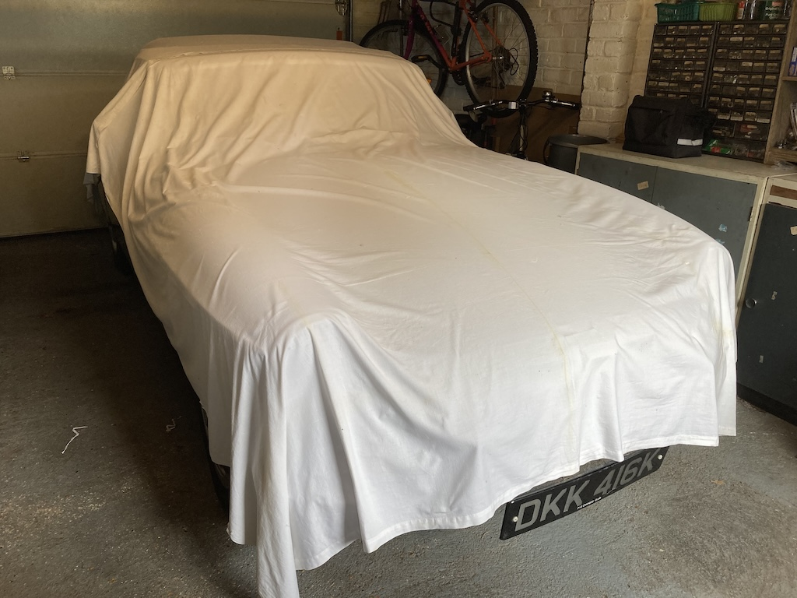

My aim is to use our MGB as much as I can. So, just as I had noted the outings made in my MG TC, so I thought I should record some details of the more significant trips made in DKK 416K.
Driving the car home from Milestone Classics at Wisborogh Green was hardly a 'trip'. Similarly a test run up to Partridge Green and back down through Henfield is not clasified as a 'trip'. Having bought the car in November, available opportunities and the weather were not particularly conducive to taking the car out. However, if you hover over the green tab on the left it will open the list of outings.